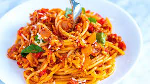

Home
Spaghetti

This spaghetti is quick and easy and tastes delicious! This dish can be
paired with our chicken milanese or
enjoyed on it's own.
Ingredients
- 1 pound lean ground meat like beef, turkey, chicken or lamb
- 1 cup (130 grams) chopped onion
- 3 garlic cloves, minced (1 tablespoon)
- 2 tablespoons tomato paste
- 1/2 teaspoon dried oregano
- Pinch crushed red pepper flakes
- 1 cup water, broth or dry red wine
- 1 (28-ounce) can crushed tomatoes
- Salt and fresh ground black pepper
- Handful fresh basil leaves, plus more for serving
- 12 ounces dried spaghetti or favorite pasta shape
- 1/2 cup shredded parmesan cheese
Steps
-
Heat the oil in a large pot over medium-high heat (we use a Dutch oven).
Add the meat and cook until browned, about 8 minutes. As the meat cooks,
use a wooden spoon to break it up into smaller crumbles
-
Add the onions and cook, stirring every once and a while, until
softened, about 5 minutes
-
Stir in the garlic, tomato paste, oregano, and red pepper flakes and
cook, stirring continuously for about 1 minute
-
Pour in the water and use a wooden spoon to scrape up any bits of meat
or onion stuck to the bottom of the pot. Stir in the tomatoes, 3/4
teaspoon of salt, and a generous pinch of black pepper. Bring the sauce
to a low simmer. Cook, uncovered, at a low simmer for 25 minutes. As it
cooks, stir and taste the sauce a few times so you can adjust the
seasoning accordingly
-
About 15 minutes before the sauce finishes cooking, bring a large pot of
salted water to the boil, and then cook pasta according to package
directions, but check for doneness a minute or two before the suggested
cooking time
-
Take the sauce off of the heat, and then stir in the basil. Toss in the
cooked pasta, and then leave for a minute so that the pasta absorbs some
of the sauce. Toss again, and then serve with parmesan sprinkled on top